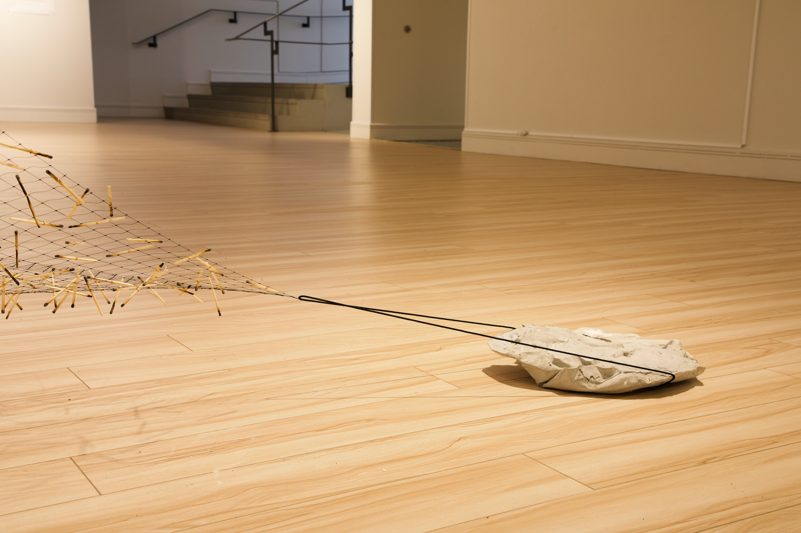
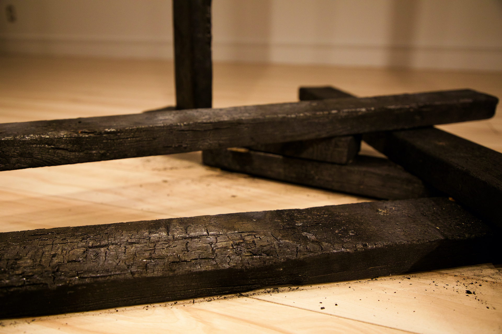
conjurer. archéologie du vertige ou jamais sans plier l'espace
Myro Le Ber Assiani & Antoine Racine, Maison de la Culture Maisonneuve, Montréal, 2022.
conjurer invite à méditer sur la fragilité du présent et la possibilité de vivre dans l’effondrement. L’installation s’inscrit dans un monde en ruines, une réalité partiellement effondrée, composée de systèmes à-demi opérants, de vestiges et de certitudes fossilisées. Elle sonde ce paysage parfois aride, cherchant à le ré-enchanter en suscitant des connexions improbables entre les êtres, les matériaux, les gestes et les idées. Une archéologie du vertige qui persiste au-delà de nos convictions. Sur la ligne mince entre l’intime et l’extime, elle ébauche un lexique sensible, une carte pour s’orienter dans les ruines.
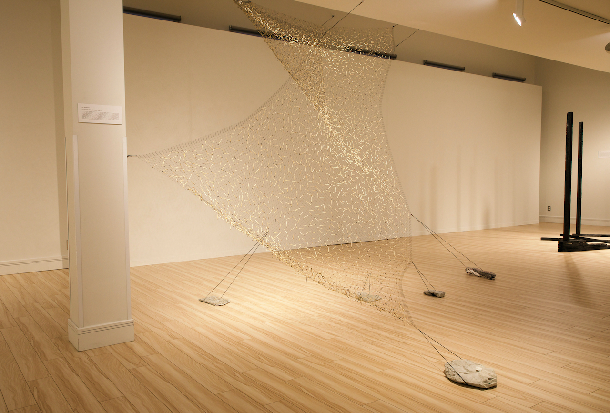
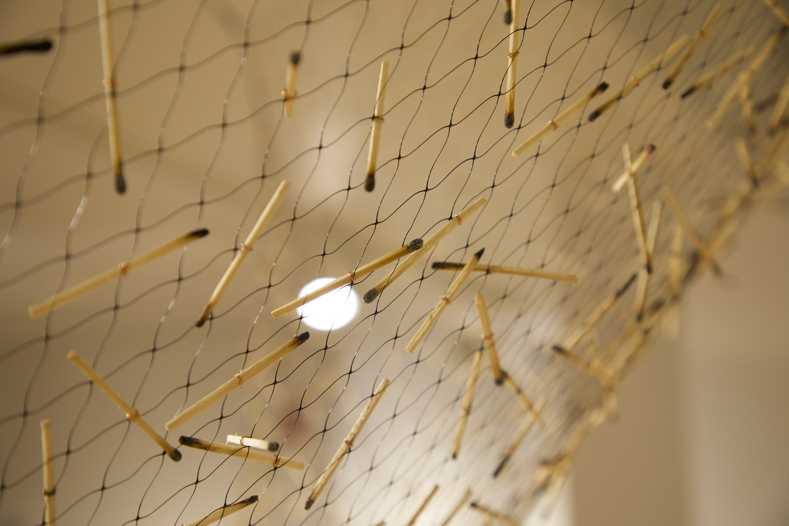
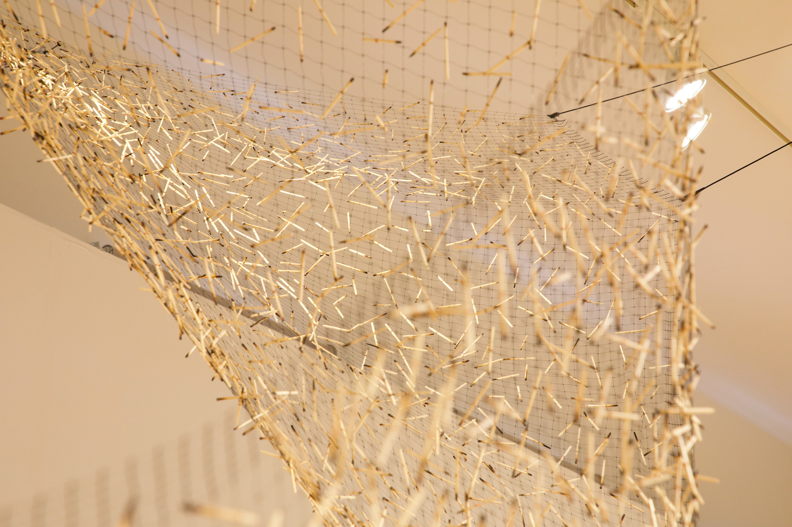
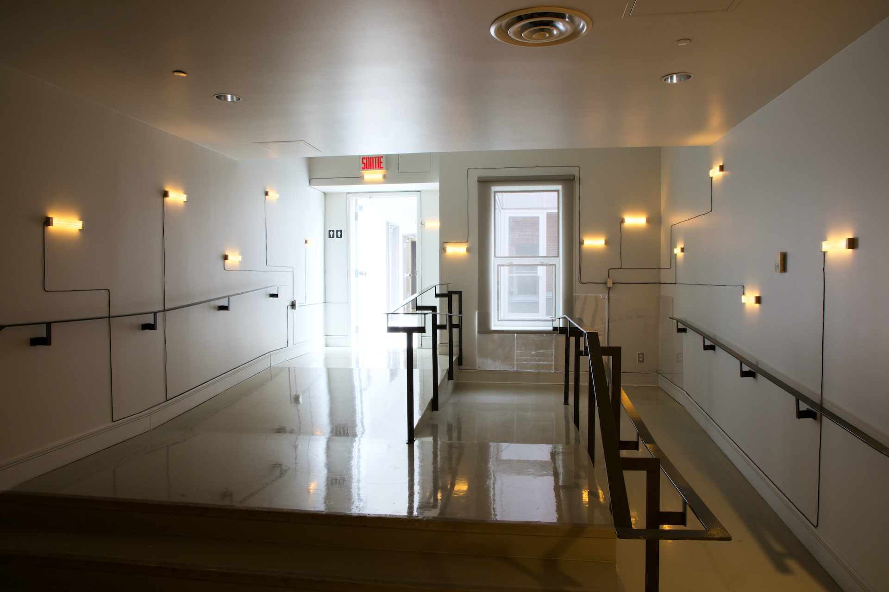
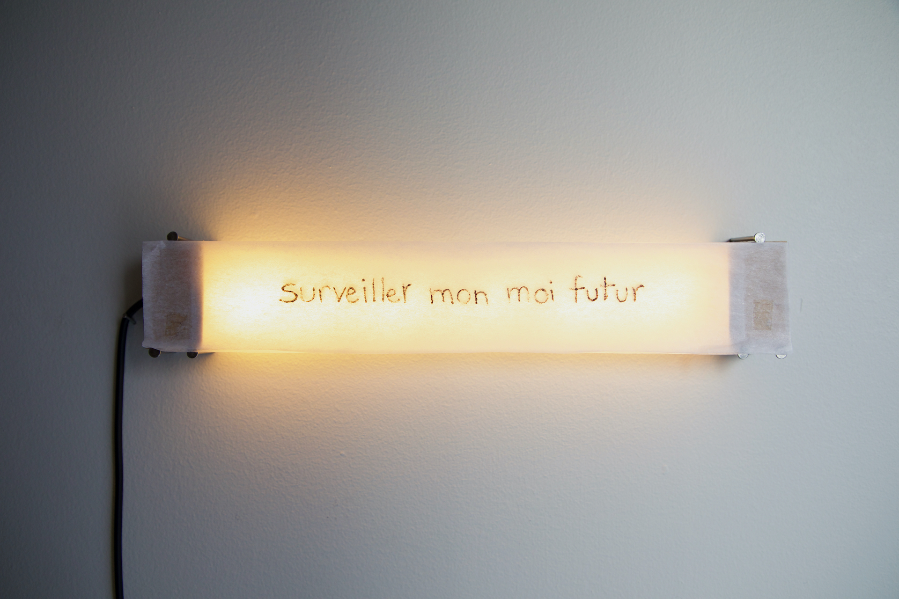
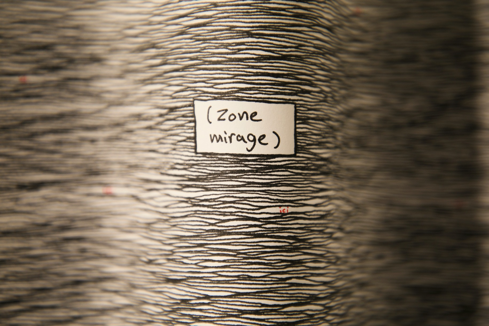
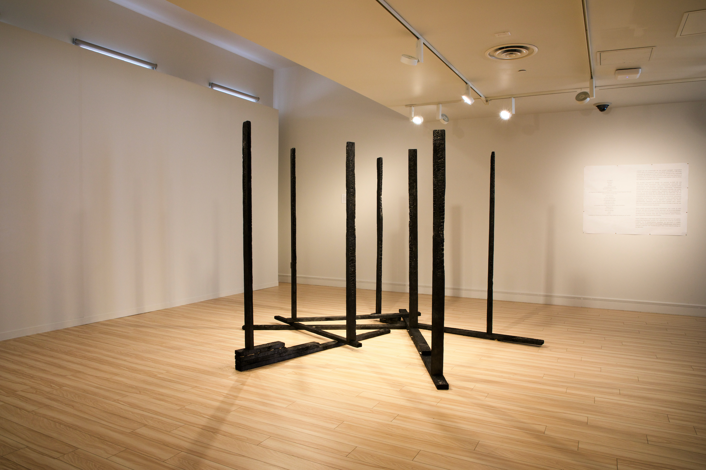
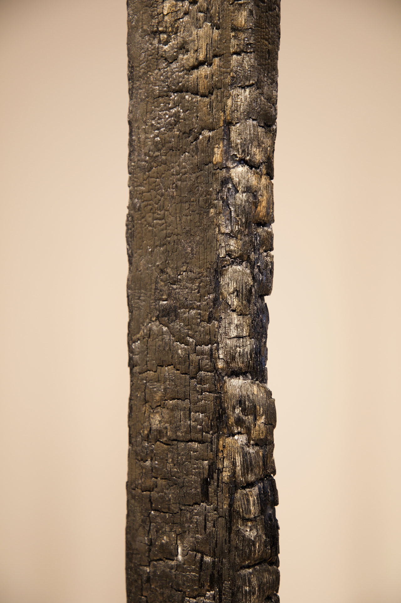
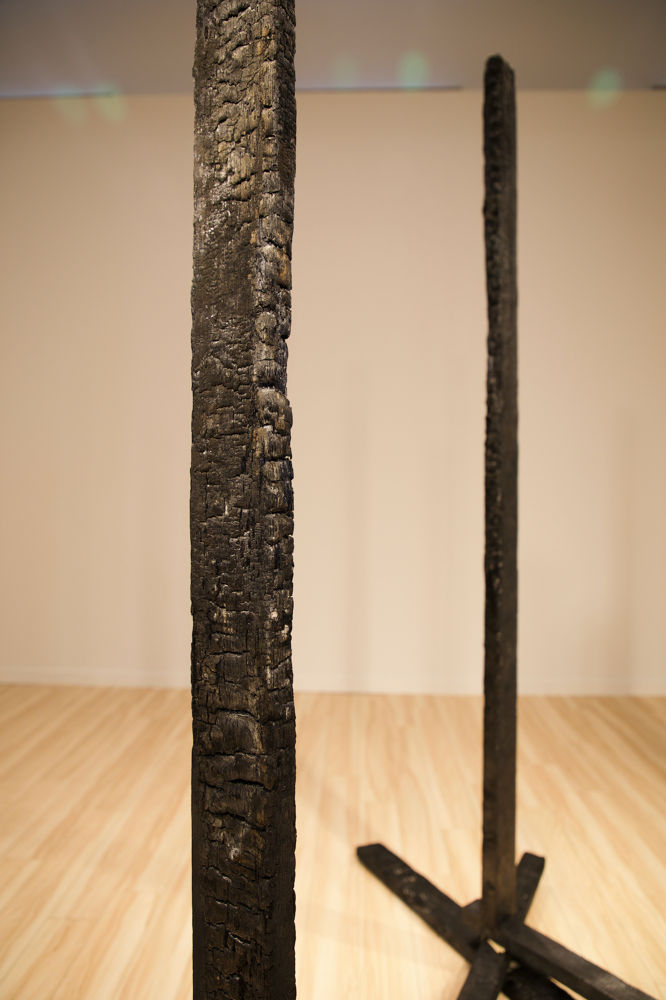

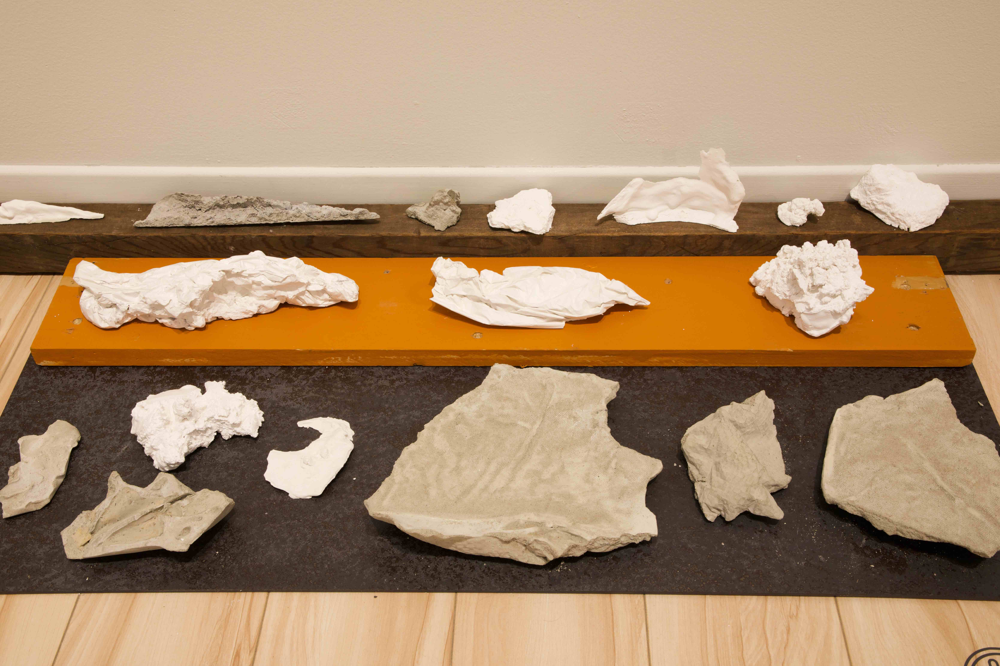
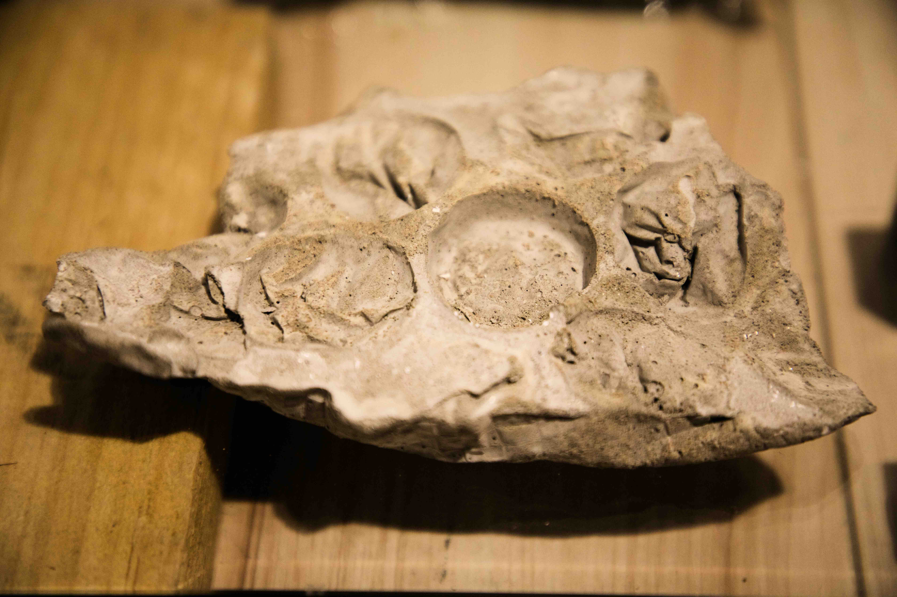
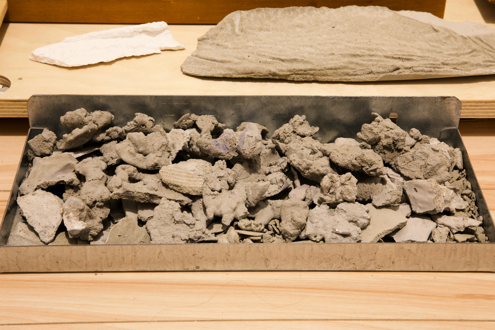
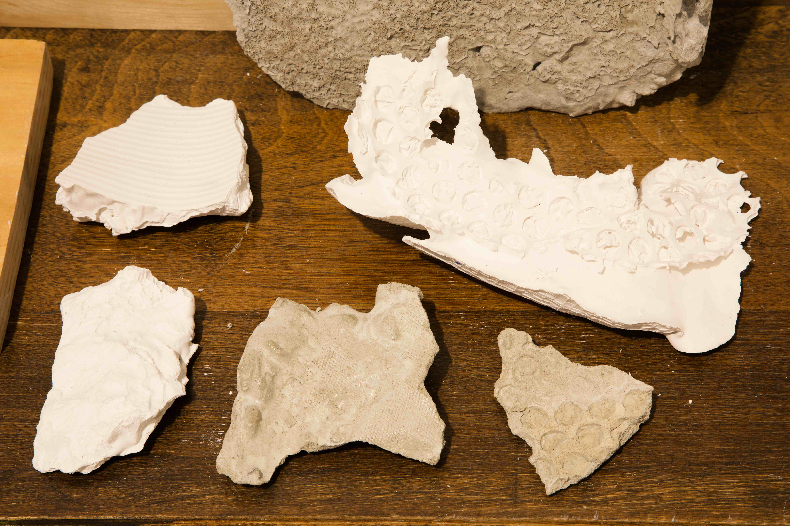